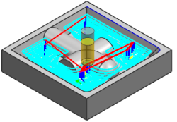
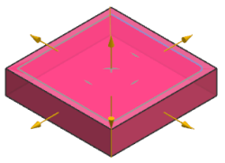
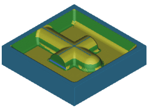

Examine the current operations
-
Open mnf16_85_flow_cut_1_setup_1.

-
On the Resource bar, click the Operation Navigator tab
 .
.
-
In the Program Order view of the Operation Navigator, right-click 1234 and choose Tool Path→Verify .
The Tool Path Visualization dialog box is displayed.

-
Click the 2D Dynamic tab.
-
Click Play
 .
.
The No Blank message box is displayed.
-
Click OK to close the message box.
The Blank Geometry dialog box is displayed.
-
Set Type to Bounding Block.

-
Click OK.

Notice there is a substantial amount of material that remains in corners and filleted areas.
-
Click OK to close the Tool Path Visualization dialog box.